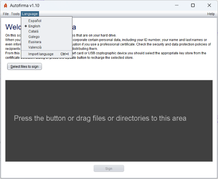
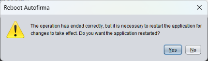
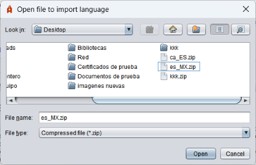

On the main Autofirma screen, you can change the language of the application by using the "Language" menu at the top. The available languages are Spanish, English, Catalan, Galician, Basque and Valencian.

Once selected, the user will be prompted to restart Autofirma to apply the changes correctly.

Autofirma also allows the user to import a language using a .zip file that contains the resources of the same. This option can be used by selecting the "Import Language" option from the "Language" menu.
